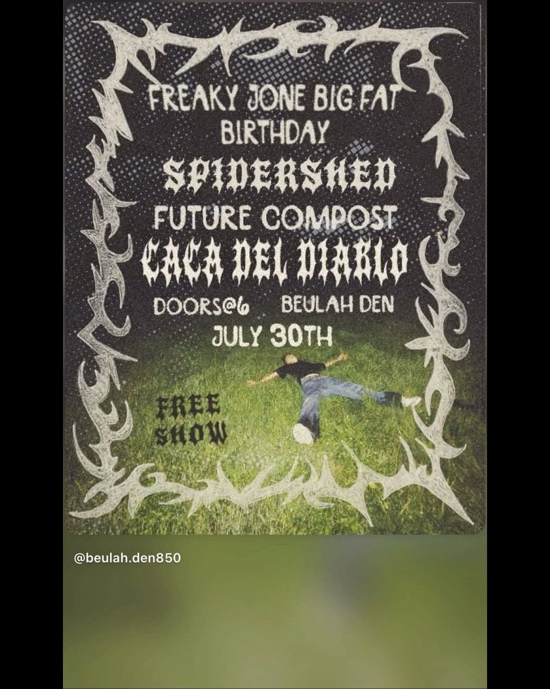

THU JUL 30
Spidershed, Future Compost, Caca del Diablo
Beulah Den · 9575 Bridlewood Rd, Beulah, FL 32526
doors 6pm
free
spidershed, future compost, and caca del diablo at beulah den for freaky jone's big fat birthday. july 30th, doors at 6. free show.